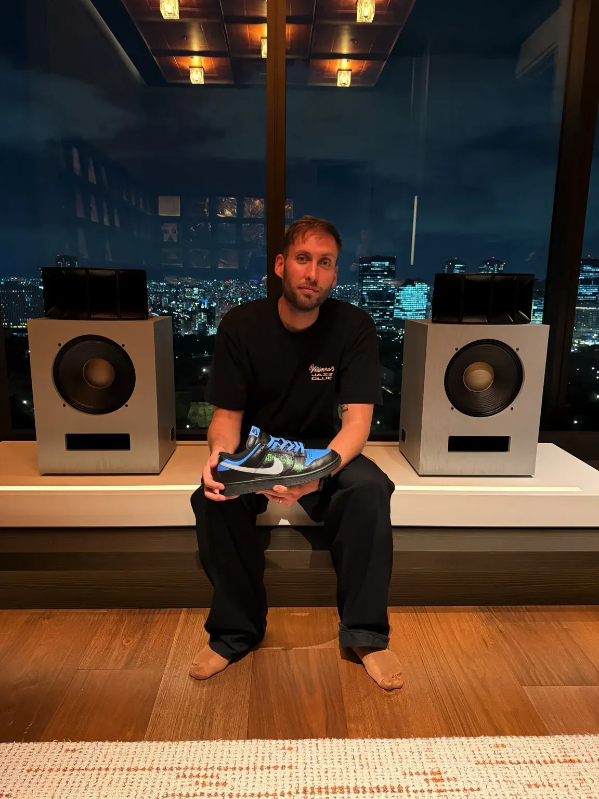

Presse · Magazine HiFi
Haute Fidélité
Le magazine de référence de l'audio d'exception, depuis plus de 30 ans — et le dernier titre de presse spécialisé encore en kiosque. Je l'ai repris et relancé en 2025 : maquette modernisée, ligne éditoriale repensée, équipe renouvelée. hautefidelite-hifi.com

La ligne éditoriale
- Exigence — tests approfondis, expertise, indépendance.
- Émotion — marques, créateurs, produits iconiques, lieux cultes.
- Expérience — un bel objet qu'on conserve et collectionne.
- Présence digitale & contenus premium en complément du papier.
Le magazine & la boutique
Site développé sous Webflow. Édition papier en kiosque — dont le hors-série HiFi Lovers × Yamaha 70 ans.
Les chantiers
En vidéo
La chaîne YouTube →Visites et essais HiFi — deux aux États-Unis, une en France. Clique pour lancer la lecture.
Moments clés
Relancer un magazine papier en 2025 ? Oui. Haute Fidélité est de retour — nouvelle formule, et déjà des rencontres marquantes, comme avec Antoine de Caunes.
Entrées liées
Tout le journal →-
Audit & mise en production boutique Shopify Haute Fidélité
Auditer et finaliser la boutique Shopify HF avant montée en charge : MCP Shopify, bascule GLS, authentification email, 4 templates éditoriaux, audit des 30+ produits et 7 collections. (Fusion de 3 sessions.)
-
Config Sendcloud × GLS pour Haute Fidélité Shopify
Mutualiser la logistique e-commerce HF avec l'infra Cobra (Sendcloud + pickup GLS quotidien) tout en gardant un suivi client aux couleurs HF. Config guidée en temps réel.
-
Docs & facturation Salon Haute Fidélité Paris 2026
Simplifier l'administratif du Salon HF 2026 : supprimer le contrat formel au profit d'une facture Qonto + conditions de participation bilingues, sur 20-30 exposants.
-
Bot Telegram de veille HiFi quotidienne
Un push Telegram chaque matin avec les news mondiales de la hi-fi : ~35 sources RSS multilingues, rédaction par l'API Claude, mémoire anti-doublons, cron GitHub Actions — from scratch.